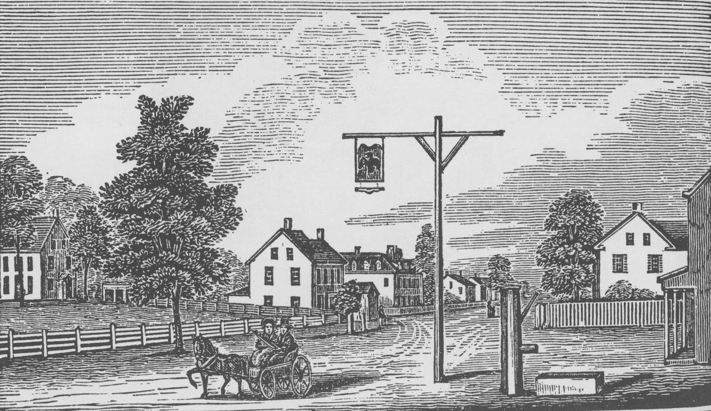
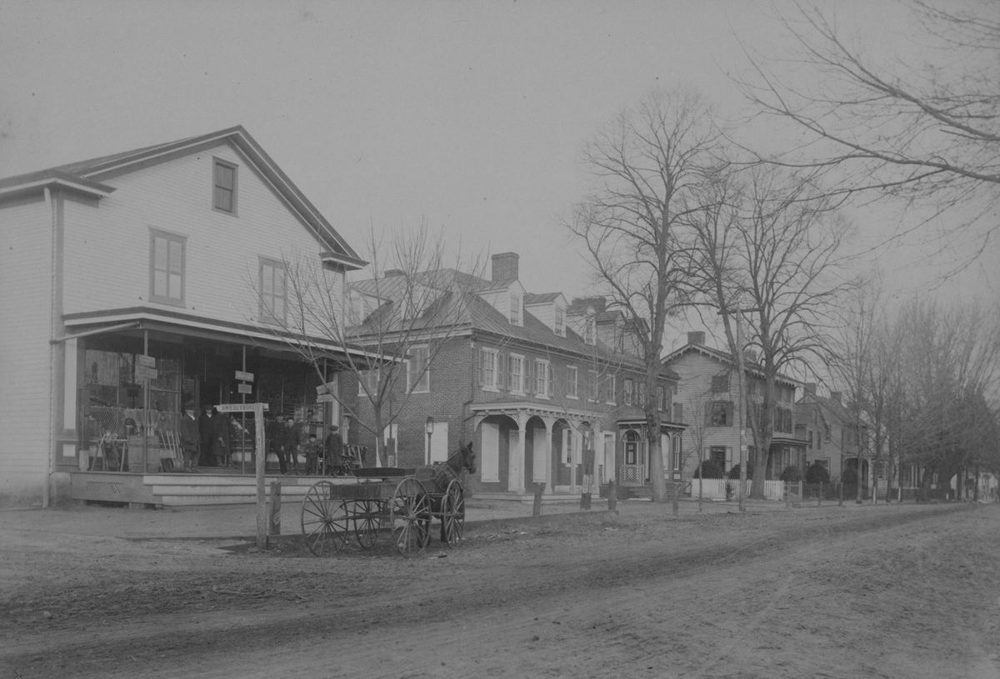
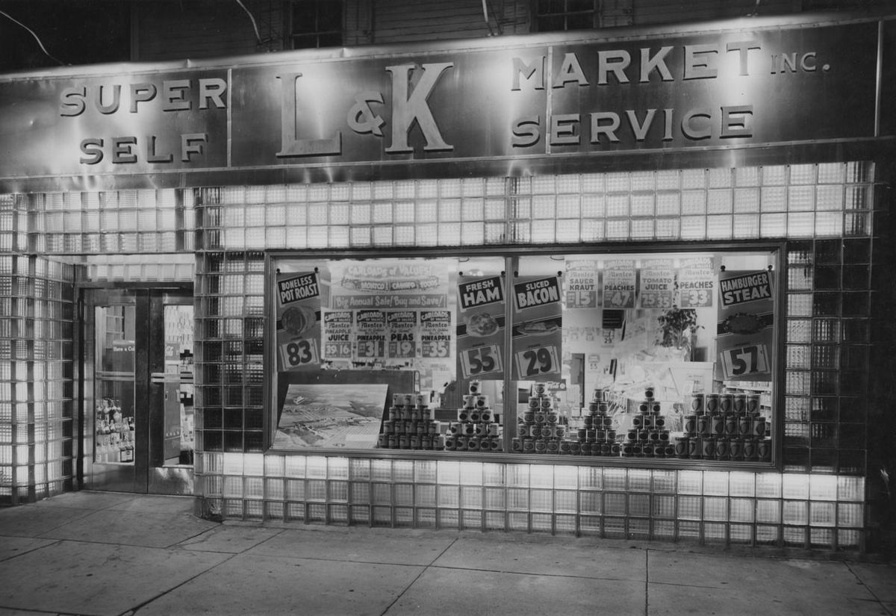

Mullica Hill Historic Walking Tour
The Brick Row
1771 · 42, 44 and 46 South Main Street

The earliest picture anyone has found of Mullica Hill is a wood engraving cut in 1844. These brick houses are already in it, and by then the center section was seventy-three years old.
The dates run 1771 for the center house, 1811 and about 1830 for its neighbors, and the National Register survey counts the trio among the district's noteworthy Federal-style examples, right down to the 19th-century privy that still hides behind the center house. Set the photograph from around 1900 against the row today and the game is finding any difference at all. A landmark, the Society's book calls it, and it has earned the word the honest way: by simply not changing.

The row has spent most of its life working. Into the early twentieth century the corner storefront belonged to E. C. Bunning, whose old-line country store anchored commerce at this end of the village while C. C. Estilow's store did the same at the north end. The two men held to a gentleman's understanding, each keeping to his own end of town. And when the village organized its modern fire company in 1904, Ed Bunning's name was on the incorporation papers.
Then, in the late 1940s, the old order ended in glass and steel. "Izzy" Lees and "Smiles" Kaplan took over Bunning's corner store at number 46 and gave it a front the township had never seen: glass block and shining stainless steel, wrapped around the first self-service shopping Mullica Hill ever had. L&K Market announced a new era at the counter, and in its turn gave way to the supermarkets that outgrew the village entirely.

Did You Know
Stand across the street and hold the photograph from around 1900 up against the row. Almost nothing has moved.
Around You Now
High Street Delicatessen serves sandwiches at 46 South Main, the old corner store beside the row. blueplate, chef James Malaby's farm-to-table restaurant, is across the street at 47.
On the Way
Up High Street from this corner, a drive rather than a walk: Mount Calvary and the school →
Share what you found
The Society collects family stories and objects from this village. If your family shopped at Bunning's, worked the L&K counter, or lived in this row, the museum wants the story.